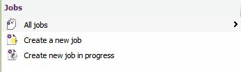
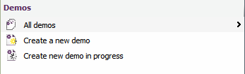
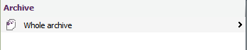
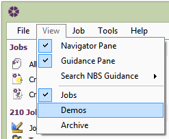

Viewing Active, Demo and Archived Jobs |
Jobs are divided into 3 groups:
Only one group of jobs will be shown at any one time, thus helping to keep the users jobs organised and assisting with their navigation and retrieval.
The current group selected will be listed in the job list:
Jobs

Demos

Archives

To change the list of jobs that is displayed in the job list, go to View and select the appropriate group to view the Jobs.

See also:
Active Jobs
Demo Jobs
Archiving Jobs
Sorting the Jobs List